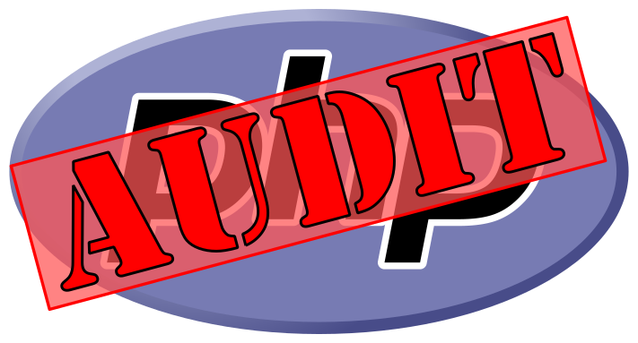

PHP Version Audit: Source on Github
PHP Version Audit: Source on Github



PHP Version Audit is a convenience tool to easily check a given PHP version against a regularly updated list of CVE exploits, new releases, and end of life dates.
PHP Version Audit is not: exploit detection/mitigation, vendor-specific version tracking, a replacement for staying informed on PHP releases and security exploits.
Index
Features
- List known CVEs for a given version of PHP
- Check either the runtime version of PHP, or a supplied version
- Display end-of-life dates for a given version of PHP
- Display new releases for a given version of PHP with configurable specificity (latest/minor/patch)
- Patch: 7.2.24 -> 7.2.25
- Minor: 7.2.24 -> 7.3.12
- Latest: 5.6.40 -> 7.3.12
- Rules automatically updated twice a day. Information is sourced directly from php.net - you'll never be waiting on someone like me to merge a pull request before getting the latest patch information.
- Multiple interfaces: CLI (via PHP Composer), Docker, direct code import
- Easily scriptable for use with CI/CD workflows. All Docker/CLI outputs are in JSON format to be consumed with your favorite tools - such as jq
- Configurable exit conditions. Use CLI flags like `--fail-security` to set a failure exit code if the given version of PHP has a known CVE or is no longer receiving security updates.
Example
docker run --rm -t lightswitch05/php-version-audit:latest --version=7.3.10
{
"auditVersion": "7.3.10",
"hasVulnerabilities": true,
"hasSecuritySupport": true,
"hasActiveSupport": true,
"isLatestPatchVersion": false,
"isLatestMinorVersion": false,
"isLatestVersion": false,
"latestPatchVersion": "7.3.12",
"latestMinorVersion": "7.4.0",
"latestVersion": "7.4.0",
"activeSupportEndDate": "2020-12-06T00:00:00+0000",
"securitySupportEndDate": "2021-12-06T00:00:00+0000",
"rulesLastUpdatedDate": "2019-12-10T02:04:16+0000",
"vulnerabilities": {
"CVE-2019-11043": {
"id": "CVE-2019-11043",
"baseScore": 9.8,
"publishedDate": "2019-10-28T15:15:00+0000",
"lastModifiedDate": "2019-10-30T20:15:00+0000",
"description": "In PHP versions 7.1.x below 7.1.33, 7.2.x below 7.2.24 and 7.3.x below 7.3.11 in certain configurations of FPM setup it is possible to cause FPM module to write past allocated buffers into the space reserved for FCGI protocol data, thus opening the possibility of remote code execution."
}
}
}
Usage
Docker
Running with docker is the preferred and easiest way to use PHP Version Audit.
Check a specific version of PHP using Docker:
docker run --rm -t lightswitch05/php-version-audit:latest --version=7.3.12
Check the host's PHP version using Docker:
docker run --rm -t lightswitch05/php-version-audit:latest --version=$(php -r 'echo phpversion();')
Run behind an HTTPS proxy (for use on restricted networks). Requires a volume mount of a directory with your trusted cert (with .crt extension) - see update-ca-certificates for more details.
docker run --rm -t -e https_proxy='https://your.proxy.server:port/' --volume /full/path/to/trusted/certs/directory:/usr/local/share/ca-certificates lightswitch05/php-version-audit:latest --version=7.4.1
CLI
Not using docker? Not a problem. It is a couple more steps, but it is just as easy to run directly.
Install the package via composer:
composer require lightswitch05/php-version-audit:~1.0
Execute the PHP script, checking the run-time version of PHP:
./vendor/bin/php-version-audit
Produce an exit code if any CVEs are found
./vendor/bin/php-version-audit --fail-security
Direct Invocation
Want to integrate with PHP Version Audit? That's certainly possible.
A word caution, this is a very early release. I do not have any plans for breaking changes,
but I'm also not committed to keeping the interface as-is if there are new features to implement.
Docker/CLI is certainly the preferred method over direct invocation.
$phpVersionAudit = new lightswitch05\PhpVersionAudit\Application(phpversion(), false);
$phpVersionAudit->hasVulnerabilities(); #=> true
$phpVersionAudit->getLatestPatchVersion(); #=> '7.3.12'
JSON Rules
The data used to drive PHP Version Audit is automatically updated on a regular basis and is hosted on GitHub pages. This is the real meat-and-potatoes of PHP Version Audit, and you can consume it directly for use in other tools. If you choose to do this, please respect the project license by giving proper attribution notices. Also, I ask any implementations to read the lastUpdatedDate and fail if it has become out of date (2+ weeks). This should not happen since it is automatically updated… but we all know how fragile software is.
Get the latest PHP 7.3 release version directly from the rules using
curl and jq:
curl -s https://www.github.developerdan.com/php-version-audit/rules-v1.json | jq '.latestVersions["7.3"]'
Options
- --help
- show arguments help message and exit.
- --version=VERSION
- set the PHP Version to run against. Defaults to the runtime version. This is required when running with docker.
- --fail-security
- generate a 10 exit code if any CVEs are found, or security support has ended.
- --fail-support
- generate a 20 exit code if the version of PHP no longer gets active (bug) support.
- --fail-patch
- generate a 30 exit code if there is a newer patch-level release.
- --fail-latest
- generate a 40 exit code if there is a newer release.
- --no-update
- do not download the latest rules. NOT RECOMMENDED!
- --silent
- do not write any error messages to STDERR.
- --v
- Set verbosity. v=warnings, vv=info, vvv=debug. Default is error. All logging writes to STDERR.
Output
- • auditVersion: string
- The version of PHP that is being audited.
- • hasVulnerabilities: bool
- If the auditVersion has any known CVEs or not.
- • hasSecuritySupport: bool
- If the auditVersion is still receiving security updates.
- • hasActiveSupport: bool
- If the auditVersion is still receiving active support (bug updates).
- • isLatestPatchVersion: bool
- If auditVersion is the latest patch-level release (7.3.x).
- • isLatestMinorVersion: bool
- If auditVersion is the latest minor-level release (7.x.x).
- • isLatestVersion: bool
- If auditVersion is the latest release (x.x.x).
- • latestPatchVersion: string
- The latest patch-level version for auditVersion.
- • latestMinorVersion: string
- The latest minor-level version for auditVersion.
- • latestVersion: string
- The latest PHP version.
- • activeSupportEndDate: string|null
- ISO8601 formatted date for the end of active support for auditVersion (bug fixes).
- • securitySupportEndDate: string
- ISO8601 formatted date for the end of security support for auditVersion.
- • rulesLastUpdatedDate: string
- ISO8601 formatted date for the last time the rules were auto-updated (twice a day).
- • vulnerabilities: object
- CVEs known to affect auditVersion with details about the CVE. CVE Details might be null for recently discovered CVEs.
Project Goals
- Always use update-to-date information and fail if it becomes too stale. Since this tool is designed to help its users stay informed, it must in turn fail if it becomes outdated.
- Fail if the requested information is unavailable. ex. getting the support end date of PHP version 6.0, or 5.7.0. Again, since this tool is designed to help its users stay informed, it must in turn fail if the requested information is unavailable.
- Work in both open and closed networks (as long as the tool is up-to-date).
- Minimal footprint and dependencies.
- Runtime support for the oldest supported version of PHP. If you are using this tool with an unsupported version of PHP, then you already have all the answers that this tool can give you: Yes, you have vulnerabilities and are out of date. Of course that is just for the run-time, it is still the goal of this project to supply information about any reasonable version of PHP.
License & Acknowledgments
- This project is released under the Apache License 2.0.
- The accuracy of the information provided by this project cannot be verified or guaranteed. All functions are provided as convenience only and should not be relied on for accuracy or punctuality.
- The logo was created using Colin Viebrock's PHP Logo as the base image, released under Creative Commons Attribution-Share Alike 4.0 International. The logo has been modified from its original form to include overlay graphics.
- This project and the use of the modified PHP logo is not endorsed by Colin Viebrock.
- This project and the use of the PHP name is not endorsed by The PHP Group.
- CVE details and descriptions are downloaded from National Institute of Standard and Technology's National Vulnerability Database. This project and the use of CVE information is not endorsed by NIST or the NVD. CVE details are provided as convenience only. The accuracy of the information cannot be verified.
- PHP release details and support dates are generated from ChangeLogs (4, 5, 7) as well as Supported Versions EOL dates. The accuracy of the information cannot be verified.